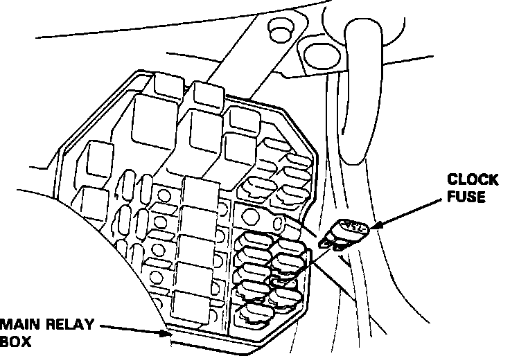

Without Scan Tool
Clock Fuse:

ECU RESET PROCEDURE
1. Turn the ignition switch OFF.
2. Remove the CLOCK (7.5 A) fuse from the main relay box for 10 seconds.
NOTE: Disconnecting the CLOCK fuse also cancels the radio preset stations. Make note of the radio presets so you can reset them.
FINAL PROCEDURE (Must be done after troubleshooting)
1. Remove the jumper wire.
2. Reset ECU as noted above.
3. Reset radio station presets.